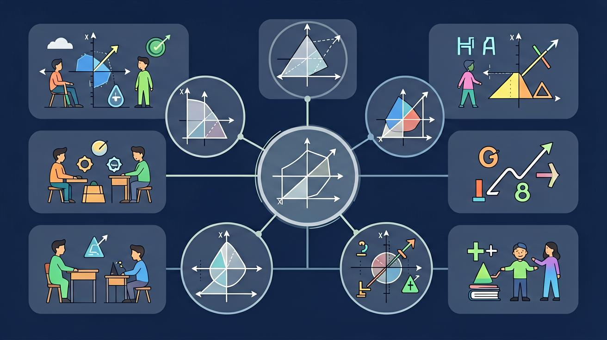

用图表说话——学会读懂和绘制条形图、折线图与扇形图

🎯 能说出平均数、中位数、众数的计算步骤
🎯 能根据数据特征选择合适的统计量
🎯 能分析统计图的误导性表达
❓ 为什么平均数有时候会骗人？
❓ 中位数和众数到底哪个更靠谱？
❓ 统计图选错了会闹笑话吗？
学完这一课，这些问题你都能自信地回答。
计算 3,5,7,9 的平均数时，漏加数字5会得到？
要比较各品牌手机销量，最适合的统计图是？
常用统计图各有侧重：条形图便于比较数量多少，折线图便于反映变化趋势，扇形图便于表示各部分占总体的百分比。频数分布直方图需要先确定极差、组距与组数，再列频数分布表。
组数 ≈ 极差 ÷ 组距（结果取不小于该值的整数）。看扇形图要记住各部分百分比之和为 100%，圆心角 = 百分比 × 360°。
常见误区：常见误区是用扇形图比较不同总体的绝对数量，或组数计算后不进位。
要反映某地气温一周内的变化趋势，最合适的统计图是？
一组数据最大值 45、最小值 24，若组距取 5，则应分成几组？
开放任务：用三步写出你如何向同学讲清「数据的描述」。
把数据按大小排队，找到中间位置就是中位数
众数就像班级里最常见的鞋码，代表最频繁出现的值
平均数对极端值敏感，中位数更抗干扰
条形图适合比多少，折线图擅长看趋势
比赛打分去掉最高最低分，就是用中位数减少极端影响
关于统计图表的选择，正确的是：
分析现有数据提出得分提升建议
💡 比较平均数与分布形态。
外链：https://phet.colorado.edu/sims/html/plinko-probability/latest/plinko-probability_zh_CN.html
先独立作答，再点选项查看对错与错因。
要直观比较各项目得分高低，最适合选用：
若想展示趣味项目占总分的比例，应补充计算：
下列哪个统计量能反映该班各项目得分差异程度？
将跳绳得分92分用扇形图表示时，对应圆心角为____度（结果保留整数）
答案：104
计算过程：92/320×360≈103.5→104度
若新增游泳项目得分后，平均数变为81分，则游泳得分为____分
答案：85
计算过程：81×5-(78+85+92+65)=85
✅ 用序号标记已计算数据
💡 未建立有序计算习惯
✅ 类别数据优先用条形图
💡 混淆数据类型的图形特征
口诀：数据排队找中间，出现最多叫众数，平均计算要谨慎，极端数值会捣乱
类比：就像排队买奶茶，中位数是正中间的人，众数是卖得最好的口味
某次考试全班平均分突然提高，可能原因是？
篮球队员身高(CM)：180,182,175,190,165,230。用哪个统计量代表身高更合理？
超市优化货架摆放，应重点分析哪种数据特征？
点击节点跳转到对应章节；可切换布局。